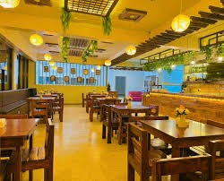
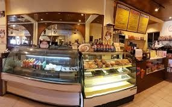
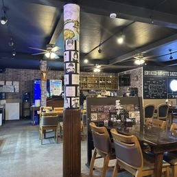
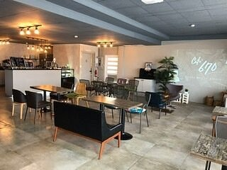

Top 5 Restaurants to Visit
Pepoy's Restaurant
Pepoy's Cafe and Restaurant serves a variety of dishes from the filipino cuture. However, they also offer western dishes and other Asian cuisines. My personal favorite are their fried rice.
Reviews
-
Sweet staff and bold flavors! 10/10 would recommend.
We got the sisig, lumpiang Shanghai, and the crispy
kare kare. They were all delicious and the presentation
was stellar. The atmosphere itself is also very elevated.
The staff is very knowledgeable and passionate about the food
they serve and it is apparent when you see and taste your meal.
— Calvin Calvo ★★★★★ -
To go or dine in this place is a must stop. Food is always
hot and delicious. Well made and a large variety of food. I prefer
the shrimp fried rice or the cheese burger and fries. Go see them you
won't be disappointed.
— James Baronie ★★★★★ -
Absolute wonderful place! I would have come to eat daily if I knew
about Pepoys sooner! Food is great! authentic Pinoy dish that you crave
and love! and wonderful welcoming staff! local or tourist, this place
doesn't have double standards and uplifts the Filipino spirit! you can
feel their aim for excellence and satisfaction for food! thank you and
will come back always 😀 mabuhay 🤙
— L. L. ★★★★★
Java Joe's
Java Joe's mostly serves light snacks and drinks like smoothies and coffee. I personally have never gone to the establishment itself but I have tried their promotional drinks which tasted amazing. Not to mention that my... horizontally challenged friends heavily recommends their chicken.
Reviews
-
Wifi signal very good and convenient outlets by tabletops in case
customers use laptops or other large devices which needs power source.
Interior very clean and customers greeted upon entering. Good service.
My wife works at a restaurant and this is her first time entering this
cafe... A co-worker brought me here once before... My wife was pleasantly
surprised by this café's service, atmosphere and menu options.
— HI Kali ★★★★★ -
So I wanna say something about Java joes it is a really kind of good
place for people to go and it is a quiet place and good to do your meetings
and hanging out with your place mostly for your school their food is great
I love to go see what is inside there food I love it so much it is perfect
their staff is awesome after seeing the video or post in their socials
looking into their business it is really good to see that there doing
good!!!!! Best wishes to this guys!!!!
— Bigbird in Saipan ★★★★★ -
Love this place. The owner was so nice, the food was amazing,
and they decorated for christmas very nicely. I missed eating
Indian food all the time in los angeles and this curry and butter
chicken did not disappoint. They can adjust the spice to your liking.
The smoothies were great too!
— carter widmor ★★★★★
J's Bowling and Restaurant
J's Bowling and Restaurant sadly closed down their bowling alley, so despite it's real name, it's more fitting to just call it J's Restaurant. However despite that, they know how to make some good chicken. Apart from that, they're mostly an all-rounder choice since they can serve various kinds of dishes.
Reviews
-
Bowling is no longer available. Okay now that that's done,
let's talk about the food. I ordered the Chamoru sausage with fried
rice, and over hard eggs side hashbrown… Your usual breakfast food
at a diner feel place, just like this..and the food was so scrumptious…
I ate it all up!! Staff was friendly and made sure waters were refilled…
also food was piping hot which I can enjoy, thank you for the freskuness!
I just want to say don't come here expecting it to be top tier diner,
super elegant exterior, like leave that BS at the door and enjoy the humble
food. The place really gives the back in the day local diner vibe and I am
100% loving it!
— Reese the Beast ★★★★★ -
We were searching for food mid afternoon on a Sunday and stumbled upon J's.
What a great find! The food was delicious and the service was phenomenal. We
enjoyed the shrimp fried rice and garlic friend rice while taking in the beautiful
ocean view and relaxing after spending the morning driving around exploring the island.
Stop in if you're in the area.
— Emily ★★★★★ -
Restaurant was nice. Food was great. Wife and I did different fried rice options
and both were delicious. Definitely suggest.
— Eddie O. ★★★★★
CK Smokehouse and Salad
CK Smokehouse and Salad is another one of those all-rounder restaurant that can offer a little bit of everything, though much more heavily focused on Asian dishes such as Filipino or Chinese. One particular thing that I personally liked here was their oriental-style chicken, which tasted like duck.
Reviews
-
CK Smokehouse and Salad is a top shelf experience offering a warm
and welcoming atmosphere with attentive and friendly staff that enhance
the dining. Overall, CK Smokehouse presents not just satisfying food but
also a genuinely inviting environment for Filipino food worth seeking out
in Saipan.
— Trevor Lane ★★★★★ -
We stopped in for lunch after church on Sunday. Google Maps doesn't have
the right location so it was hard to find. Everything we ordered, we really
liked! Our server was super friendly and had great recommendations for us.
We basically just ordered everything she told us to! The fried chicken was
amazing! I wish I could remember the names of the other dishes, because they
were all great and we would order them all again! We ordered one of the fried
chickens with Wasabi and it was not super hot. My boys all thought it was
delicious. The regular order of fried chicken came with a very generous amount of chicken! The noodle dish we ordered was probably my favorite, it was so
flavorful! We'll def be back!
— M Morley ★★★★★ -
Solid restaurant with a lively vibe and nice employees. French fries were standard,
but there's nothing wrong with that. Da chicken and pork dish was splendid as it tender,
smoking hot (pun intended), and tasty. Great ginger and green onions to complement the
meal as well. Quite a unique dish with the sisig omelette. It was interesting yet fun to
try out. The egg itself was okay, but the sisig was hot and delicious. Nice little macaroni
salad that comes with it too. Overall, CK Smoke House was pretty good, and I'd definitely come
again. Whenever that happens.
— Ted Pamintuan ★★★☆☆
Cafe 670
Cafe 670 primarily serves coffee (go figure), along with some desserts to go with it. However if caffeine isn't exactly your palate, they still offer some other non-caffeinated drinks to choose from.
Reviews
-
On my sister's soul it's banger.
— AmQuasi ★★★★★ -
We've visited 3 times since moving to Saipan. Reina has been kind
and friendly every time. Drinks were made with care. The coconut coffee
smoothie is my favorite. I love coconut and it's not too sweet and syrupy.
The strawberry lemon smoothie is very fresh tasting. They offer a punch
card. Once stamped 7 times, you get $4ish off your next purchase.
— M Morley ★★★★★ -
Yummy to the last drop. Their menu isn't broad but every drink they serve
is perfection. Try their coconut coffee and you'll know what I mean. It's
so hard to find decent ginger tea and this place makes it so potent it'll cure
any illness. That brown sugar tea, this is the best place to get that too!.
— Brenda Tores ★★★★★